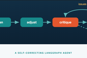
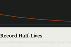
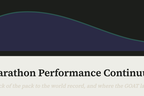
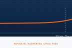
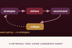
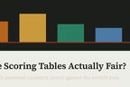
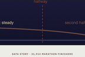
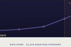

SkillCompass
Skill checks scored like chess ratings
SkillCompass gives two-minute quizzes in 40-plus fields, rates them Elo-style on real response data, and returns a percentile, a knowledge map and a study plan. Runs full stack on $0 a month.

Data scientist. UCLA Anderson MSBA.
30 projects, all live.
Five projects that show the range: a full-stack product, a decision tool, two data stories and a language app.
SkillCompass
SkillCompass gives two-minute quizzes in 40-plus fields, rates them Elo-style on real response data, and returns a percentile, a knowledge map and a study plan. Runs full stack on $0 a month.
Decision tools
An EV trip planner with range modeling adjusted for elevation and weather, charger stops under a hard reserve, and a detour budget spent avoiding unprotected left turns.

Survival analysis
Kaplan-Meier and Cox regression over ~250 track-and-field record reigns. Median half-life: about 1.5 years, with an estimate of which current records fall next.

Regression
Fourteen Boston Marathons paired with race-day weather: the field median slows roughly one minute per degree Fahrenheit (r = 0.86).

Language
Hong Kong news rewritten to spoken register with a review pass, neural zh-HK audio, jyutping, tap-to-compare and speech grading. Costs nothing to run.

Four photo-to-structured-data apps. Each pairs an LLM pipeline with a small model fine-tuned locally (LoRA) on the same task, benchmarked base vs. fine-tuned vs. Claude zero-shot.
Cellar Scanner
Fine-tuned LoRA beats Claude zero-shot at top-1 grape variety from a blind tasting note.

Menu Decoder
Cuisine accuracy from a bare dish name; 69.3% recall across 14 allergens.

Receipt Auditor
Spend-category accuracy on held-out merchants; zero-shot Claude reaches 56.0%.

Race Day Copilot
Every km-by-km pacing plan is verified against five deterministic checks.

Findings from the analysis projects, each with the chart that carries it.
Wine Score Inflation
Across 130,000 professional reviews, nothing scores below 80 and 86% land between 84 and 92. Price buys points, with steep diminishing returns.

Hitting the Wall
Per-5K splits hold flat for 30 km, then slow sharply; the median late-race slowdown is 15%.

Love Island Lexical Analysis
61% of everything said on a season is the top 100 words; about 1,250 words cover 95% of the show.

Grouped the way I file them. The name opens the code.

Marathon Training AgentSiteWriteup
World-Record Half-LivesSiteWriteup
Performance ContinuumSiteWriteup
Marathon Strategy RAGSiteWriteup
Wine Pairing AgentSiteWriteup
Scoring-Table Fairness AuditSiteWriteup
The Negative-Split MythSiteWriteup
Hitting the WallSiteWriteup